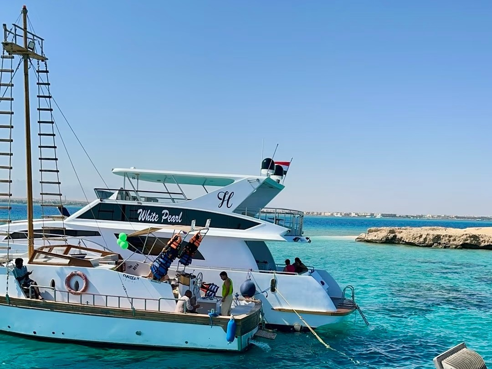
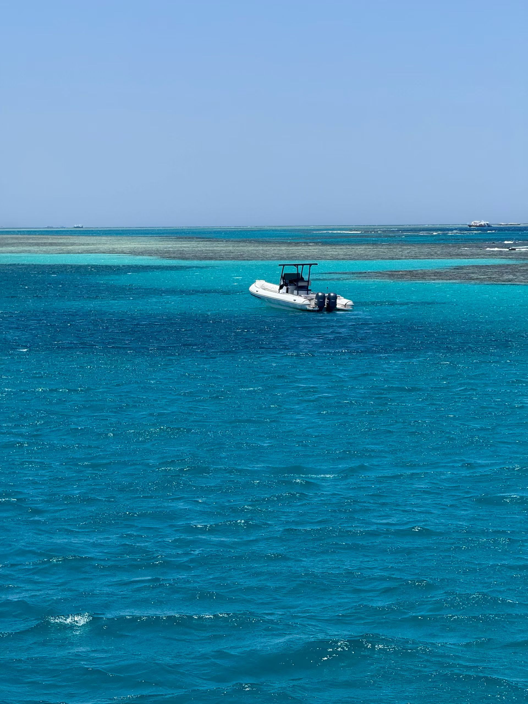
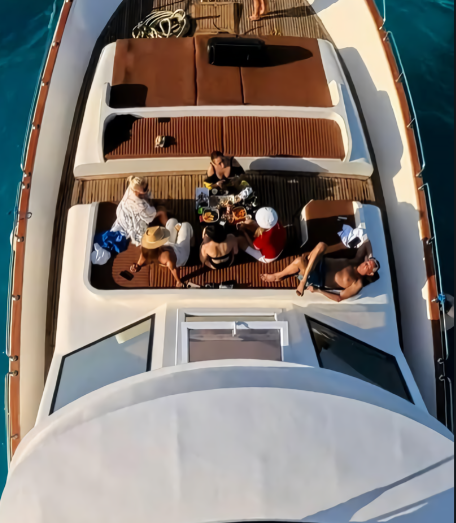
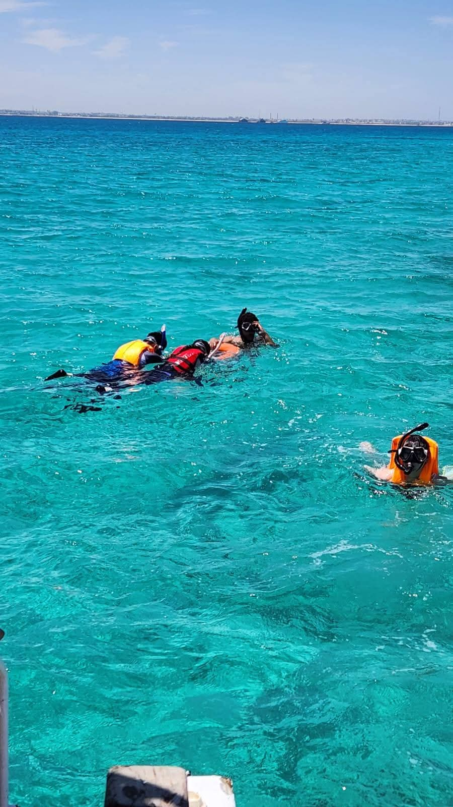
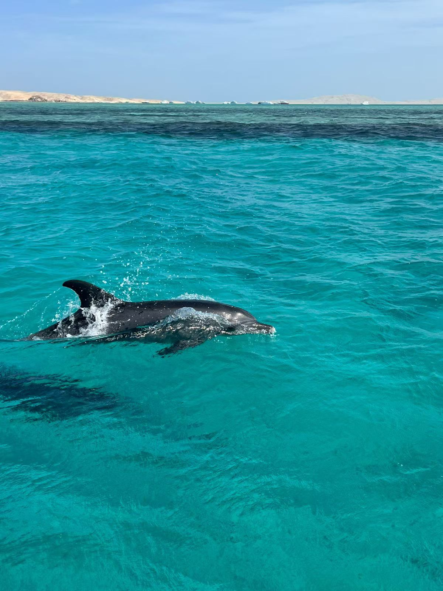

Still not sure? Just ask a consultant
Tell us your concerns and we will help you avoid the pitfalls and find the right boat.
Free EnquiryA day at sea is beautiful — but there are a few traps too. Five minutes with these six tips will save you detours and needless spending.

UV levels on the Red Sea are extreme, and reflection off the water doubles the burn. Bring high-factor waterproof sunscreen, a sun hat and sunglasses, and keep drinking water throughout the day. Water is provided on board, but sensitive guests may want to bring their own electrolyte drinks.
Tipping is part of local custom here, and tourism staff rely on it as part of their income. If you enjoyed your trip, leaving a little something for the crew is much appreciated.

Hold on firmly when boarding and disembarking, wear your life jacket properly, and avoid the deck edge when the sea is rough. Even confident swimmers should keep safety gear on at all times. Minors must be accompanied by an adult. This platform is not liable for accidents caused by guests' own breach of the rules.

Boats are in high demand in peak season. Last-minute bookings may leave you without a suitable vessel, or without enough time to complete the departure paperwork — please try to book at least 2 days in advance.
A price that looks too low often means an old boat, no insurance or hidden surcharges. Check whether the vessel is licensed to operate, whether insurance is included and whether the skipper holds a licence. Booking through us lets you compare several boats and see the full breakdown — so you avoid the “bait price” trap.

Fuel surcharges, marina fees, equipment rental and meal upgrades are often added on afterwards. Before signing, make sure you know exactly what the “all-in” price covers. This site keeps its pricing structure transparent: every item is listed up front, and we never take payment online.

Dolphins, turtles and other wild marine animals do not stay at fixed spots — they follow their own rhythms. If you don't get to meet your favourite species that day, or an animal seems unwell, please respect its natural behaviour.
Tell us your concerns and we will help you avoid the pitfalls and find the right boat.
Free Enquiry